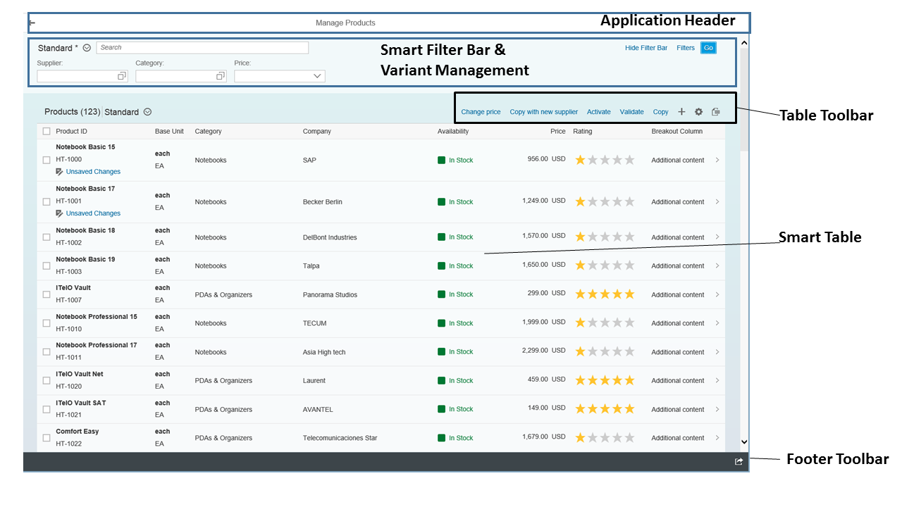

The list report allows the user to work with a large list of items. It combines powerful functions for filtering large lists with different ways of displaying the resulting item list.
Example of a list report:
Application header
Smart filter bar with variant management
Smart table
Send Email
For more information about the various functions of the list report view, see the following:
|
Subject |
Link |
|---|---|
|
Smart filter bar control |
|
|
Smart table control |
|
|
Smart controls tutorial for the smart filter bar and smart table |
|
|
Social media integration (enabling the Share in SAP Jam option in the footer toolbar) |
|
|
Enabling additional features and functionality for the list report |